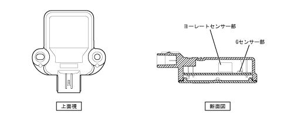

| Yaw Rate Sensor & Linear G Sensor |
| ● |
The semiconductor type yaw rate sensor and G sensor are integrated for compactness and mounted under the front passenger seat. When acceleration acts on the vehicle, the movable electrode in the G sensor moves, changing its distance from the fixed electrode; the capacitance between the electrodes is measured and converted into an electrical signal. By combining 2 G sensors, each mounted at an angle of 45 degrees relative to the longitudinal direction of the vehicle, deceleration can be detected in all horizontal directions, and together with the linear output characteristics, this allows precise control on various road surfaces.
|
| ● |
The yaw rate sensor detects the angular velocity of the vehicle's rotation around its vertical axis (yaw rate) from the amount and direction of strain in a piezoelectric ceramic. Dedicated ICs are used for sensor body excitation and signal processing, reducing size and ensuring reliability.
|
 |